第7章 外周血管
原书页 136–197 · 62 个页面区块 · 72 张配图。正文、图注与图片保持原书顺序。
| ATA | anterior tibial artery | 胫前动脉 |
| ATV | anterior tibial vein | 胫前静脉 |
| AxA | axillary artery | 腋动脉 |
| AxV | axillary vein | 腋静脉 |
| BA | brachial artery | 肱动脉 |
| BV | brachial vein | 肱静脉 |
| CCA | common carotid artery | 颈总动脉 |
| CFA | common femoral artery | 股总动脉 |
| CFV | common femoral vein | 股总静脉 |
| DFA | deep femoral artery | 股深动脉 |
| DFV | deep femoral vein | 股深静脉 |
| DPA | dorsalis artery | 足背动脉 |
| ECA | external carotid artery | 颈外动脉 |
| GSV | great saphenous vein | 大隐静脉 |
| IA | innominate artery | 无名动脉 |
| ICA | internal carotid artery | 颈内动脉 |
| IJV | internal jugular vein | 颈内静脉 |
| LATA | left anterior tibial artery | 左胫前动脉 |
| LATV | left anterior tibial vein | 左胫前静脉 |
| LECA | left external carotid artery | 左颈外动脉 |
| LICA | left internal carotid artery | 左颈内动脉 |
| LPOA | left popliteal artery | 左腘动脉 |
| ·LPOV | left popliteal vein | 左腘静脉 |
| ·LPTA | left posterior tibial artery | 左胫后动脉 |
| ·LPTV | left posterior tibial vein | 左胫后静脉 |
| ·POA | popliteal artery | 腘动脉 |
| ·POV | popliteal vein | 腘静脉 |
| ·PTA | posterior tibial artery | 胫后动脉 |
| ·PTV | posterior tibial vein | 胫后静脉 |
| ·RA | radial artery | 桡动脉 |
| ·RAxV | right axillary vein | 右腋静脉 |
| ·RBA | right brachial artery | 右肱动脉 |
| ·RBV | right brachial vein | 右肱静脉 |
| ·RCCA | right common carotid artery | 右颈总动脉 |
| ·RCFA | right common femoral artery | 右股总动脉 |
| ·RCFV | right common femoral vein | 右股总静脉 |
| ·RDFA | right deep femoral artery | 右股深动脉 |
| ·RECA | right external carotid artery | 右颈外动脉 |
| ·RICA | right internal carotid artery | 右颈内动脉 |
| ·RIJV | right internal jugular vein | 右颈内静脉 |
| ·RSCV | right subclavian vein | 右锁骨下静脉 |
| ·RSFA | right superficial femoral artery | 右股浅动脉 |
| ·RV | radial vein | 桡静脉 |
| ·RVA | right vertebral artery | 右侧椎动脉 |
| ·SCA | subclavian artery | 锁骨下动脉 |
| ·SCV | subclavian vein | 锁骨下静脉 |
| ·SFA | superficial femoral artery | 股浅动脉 |
| ·SFV | superficial femoral vein | 股浅静脉 |
| ·UA | ulnar artery | 尺动脉 |
| ·UV | ulnar vein | 尺静脉 |
| ·VA | vertebral artery | 椎动脉 |
| ·VV | vertebral vein | 椎静脉 |
一、 动脉系统
（一） 颈总动脉纵切面（图7-1）
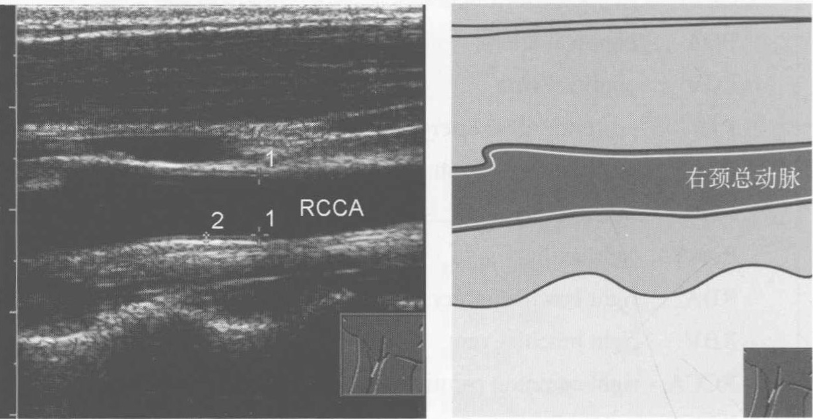
图7-1 颈总动脉纵切面
注：1. 颈总动脉内径测量方法；2. 颈总动脉内中膜厚度测量方法
【探查方法】受检者取仰卧位，头略后仰，充分伸展颈部，头转向被检查的对侧或保持正中位，探头置于颈部侧面或后外侧，自下而上纵向 扫查。
【断面结构】显示颈总动脉纵断面，甲状软骨上缘水平显示颈总动脉分叉部（颈膨大）纵断面。第一层强回声线，为动脉内膜和管腔的无回声区形成的反射界面，一般比内膜厚。第二层低回声线为中膜，第三层强回声线为外膜。
【测量方法及正常值】 测量颈动脉内 - 中膜厚度（IMT），指第一层强回声线和第二层低回声线的厚度。测内径在一侧壁的内缘到对侧壁的内缘。内膜厚度应 < 0.09cm，≥ 0.09cm 为异常。但 IMT 的正常值和年龄密切相关，可以说随着年龄的增长会增厚，有研究发现 40 岁时平均厚度为 0.48mm，按照（0.009 × 年龄）+ 0.116 公式计算，100 岁时 IMT 可达 1.02mm。内径正常值见表 7-1。
表 7-1 不同年龄颈动脉内径测值（x ± SD，mm）
| 年龄（岁） | 颈总动脉 | 颈内动脉 | 颈外动脉 |
| 20～40 | 6.6 ±0.4 | 5.4 ±0.5 | 4.3 ±0.4 |
| 41～50 | 6.7 ±0.5 | 5.6 ±0.5 | 4.6 ±0.5 |
| 51～60 | 6.9 ±0.5 | 5.4 ±0.6 | 4.4 ±0.6 |
| 60以上 | 7.5 ±0.9 | 6.0 ±0.8 | 4.7 ±0.4 |
【临床意义】 显示颈动脉的解剖位置、形态、走行，管壁及管腔情况。特别是内-中膜厚度，当 >0.13cm时，定义为斑块。斑块最好发的部位是颈动脉膨大处。有报道提示颈动脉内-中膜厚度可以作为反映动脉粥样硬化严重程度的一个辅助观察指标。
（二） 颈总动脉横切面（图7-2）
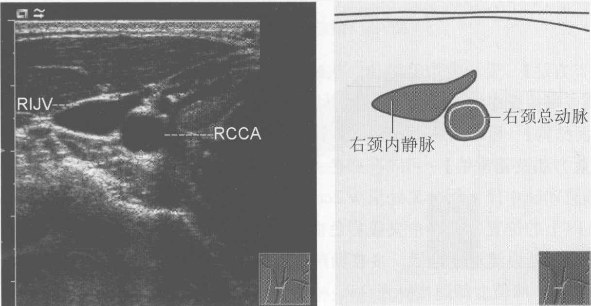
图7-2 颈总动脉横切面
【探查方法】受检者取仰卧位，头略后仰，充分伸展颈部，头转向被检查的对侧或保持正中位，探头置于颈部侧面或后外侧，自下而上横断扫查。
【断面结构】显示颈总动脉及颈内静脉横断面，甲状软骨上缘水平显示颈总动脉分叉部（颈膨大）横断面。
【测量方法】 测量颈动脉内-中膜厚度（IMT），指第一层强回声线和第二层低回声线的厚度。测内径在一侧壁的内缘到对侧壁的内缘。
【临床意义】显示颈动脉的解剖位置、形态、走行、管壁及管腔情况。有人认为测内-中膜厚度，横断面较纵断面准确。如有斑块，在斑块表面到对侧壁内缘测内经。测量斑块的厚度最好在横断面测量。在横断面测管腔狭窄面积，估计狭窄程度。
（三） 颈总动脉多普勒频谱（图7-3）
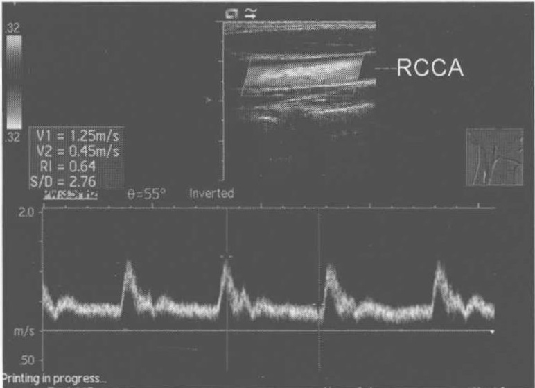
图7-3 颈总动脉多普勒频谱
【探查方法】受检者取仰卧位，头略后伸，充分伸展颈部，头转向被检查的对侧或保持正中位，探头置于颈部外侧或后外侧，自下而上纵向扫查。
【断面结构】显示颈总动脉纵断面多普勒血流频谱。
【测量方法及正常值】 可以在彩色多普勒引导下，将脉冲多普勒取样容积置于颈总动脉中段，距分叉处至少2cm以上的位置，有狭窄时应该在距分叉处4cm以上的位置，管腔中央或彩色血流信号最亮或花色血流信号的位置。越靠近分叉处血流速度越低。多普勒声束校正角度 θ线尽量和血流束平行，角度 ≤60°。峰值血流速度见表7-2。
表7-2 颈总、颈内、颈外动脉血流测值（x ± SD，cm/s）
| PSV（收缩期峰值血流） | EDV（舒张末期最低流速） | RI | |
| 颈总动脉 | 91.3 ±20.7 | 27.1 ±6.4 | 0.7 ±0.05 |
| 颈内动脉 | 67.6 ±14.3 | 27.3 ±6.4 | 0.59 ±0.06 |
| 颈外动脉 | 70.9 ±16.1 | 18.1 ±5.1 | 0.74 ±0.09 |
【临床意义】 正常双侧颈总动脉中段频谱形态应该对称，同侧或对侧的颈总动脉近端或颈内动脉远端明显狭窄，会使颈总动脉血流频谱显示高阻力形态，如果颅内血管有交通支，则可能出现低阻力状态。
（四） 颈内及颈外动脉纵切面（图7-4）
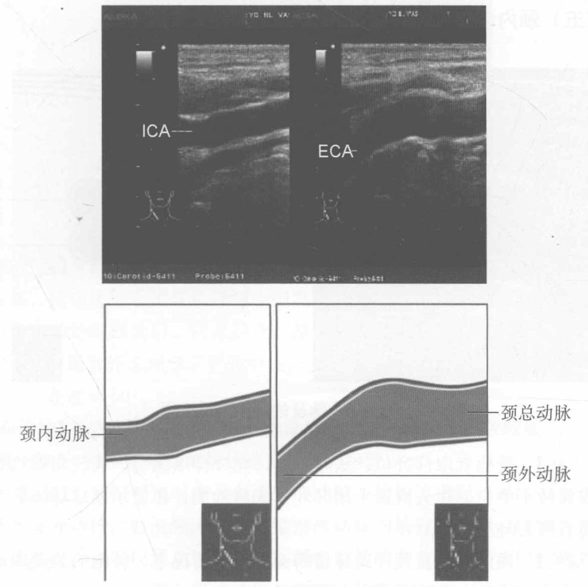
图7-4 颈内及颈外动脉纵切面
【探查方法】仰卧位，头略后仰，转向被检查的对侧或保持正中位，充分伸展颈部，探头竖置于颈部后外侧胸锁乳突肌后方，声束指向前内方。显示颈总动脉分叉处纵断面，向上扫查。颈内动脉位于后外侧，颈外动脉位于前内侧。
【断面结构】显示颈总动脉纵断面，颈内及颈外动脉纵断面。
【测量方法】 测量颈动脉内-中膜厚度(IMT)、内径、斑块累及范围及血流频谱。
【临床意义】显示颈内外动脉的解剖位置，管壁及管腔情况。如有斑块，可大致观察斑块的位置，回声类型、有无凹陷及累及范围等，目前认为斑块的
危险性更多在于其稳定性而不是其造成的管腔狭窄程度。
【附注】 文献报道约60%以上的颈内、外动脉在分叉以上可在同一平面显示，其余的在颈总动脉的水平仅可见一条血管。一般情况下，颈外动脉较细且有分支，甲状腺上动脉是第一分支，较易观察到。颈内动脉起始部往往较粗且无分支。向上走行两管径一致。
（五） 颈内动脉及颈外动脉横切面（图7-5）
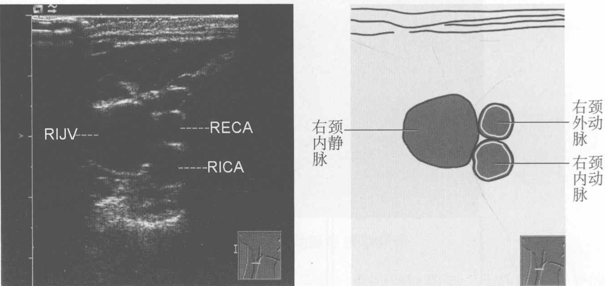
图7-5 颈内动脉及颈外动脉横切面
【探查方法】受检者取仰卧位，头略后伸，充分伸展颈部，头转向被检查的对侧或保持正中位，探头横置于颈部外侧或后外侧，在显示颈总动脉膨大处横断面后探头向上移动。
【断面结构】颈内动脉及颈外动脉横断面。一般情况下，较粗的为颈内动脉，位于后外侧。较细的为颈外动脉，位于前内侧。
【测量方法】 测量颈动脉内-中膜厚度（IMT）、内径及斑块厚度。
【临床意义】显示颈动脉的解剖位置，管壁及管腔情况，有利于观察偏心性斑块，管腔狭窄时可计算面积和狭窄率。
【附注】文献报道约60%以上的颈内、外动脉在分叉以上可在同一平面显示，其余的在颈总动脉的水平仅可见一条血管。一般情况下，颈外动脉较细且有分支，颈内动脉往往较粗且无分支。
（六） 颈内动脉多普勒频谱（图7-6）
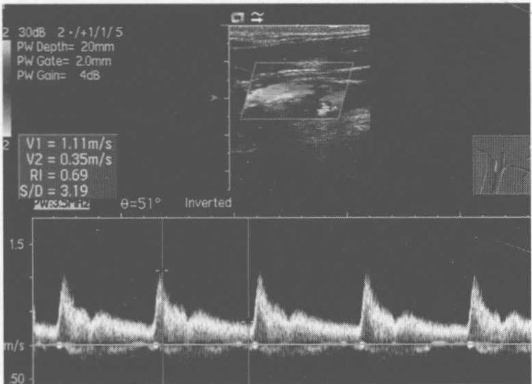
图7-6 颈内动脉多普勒频谱（见彩图11）
【探查方法】仰卧位，头略后仰，转向被检查的对侧或保持正中位，充分伸展颈部，探头竖置于颈部后外侧胸锁乳突肌后方，声束指向前内方。显示颈总动脉分叉处纵断面后，向上扫查。颈内动脉位于后外侧，颈外动脉位于前内侧。多普勒取样容积置于管腔中央，多普勒声束校正角度 θ 线尽量和血流束平行，角度 ≤ 60°。
【测量方法】测血流频谱的峰值速度及阻力指数。
【断面结构】呈正向三峰波形。颈内动脉的血流频谱阻力指数较低。
【临床意义】根据频谱形态、血流速度及阻力指数等指标，可以①鉴别颈内动脉和颈外动脉。血流频谱形态是鉴别两动脉的最有效指标，特别是在颈内动脉闭塞时。如发现颈动脉分叉处这两根血管的多普勒频谱相似，阻力指数相同或相近，则这两根血管很可能是颈外动脉和其分支，颈内动脉很有可能闭塞了。②确定动脉有无狭窄，一般狭窄出口处流速增快明显。③提示远端血管有无狭窄或闭塞，有无动静脉瘘。④提示近端血管有无狭窄或闭塞。
（七） 颈外动脉多普勒频谱（图7-7）
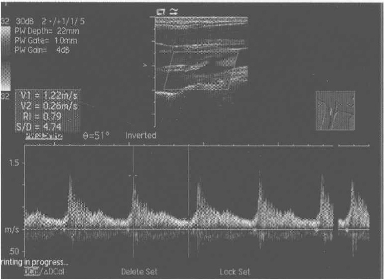
图7-7 颈外动脉多普勒频谱（见彩图12）
【探查方法】仰卧位，头略后仰，转向被检查的对侧或保持正中位，充分伸展颈部，探头竖置于颈部后外侧胸锁乳突肌后方，声束指向前内方。显示颈总动脉分叉部纵断面后，向上扫查。颈内动脉位于后外侧，颈外动脉位于前内侧。多普勒取样容积置于管腔中央，多普勒声束校正角度 θ线尽量和血流束平行，角度 ≤60°。
【断面结构】 颈外动脉血流频谱呈正向三峰波形，舒张期血流速度低，阻力指数较颈内动脉高。
【测量方法】测血流频谱的峰值速度及阻力指数。
【临床意义】根据频谱形态、血流速度及阻力指数等指标，鉴别颈内动脉和颈外动脉的另一个指标是在耳廓前方轻击颞动脉，在颈外动脉多普勒频谱上表现为小的反复的波动峰，而在颈内动脉频谱则无波动。
（八）左颈总动脉起始部及左锁骨下动脉纵切面（图7-8）
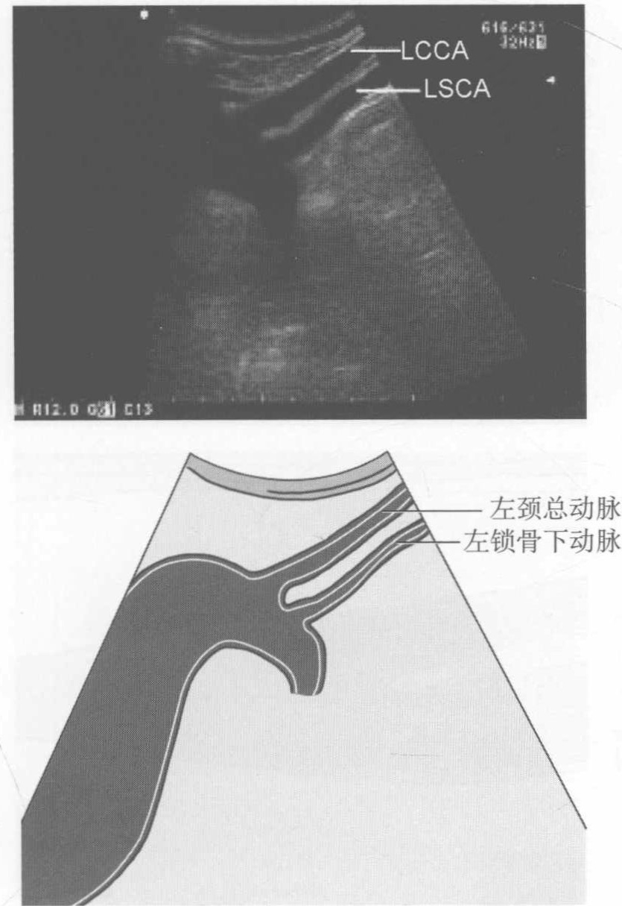
图7-8 左颈总动脉起始部及左锁骨下动脉纵切面
【探查方法】受检者取仰卧位，头略后仰，充分伸展颈部，头转向右侧，探头位于颈根部扫查，对于深在的颈动脉、锁骨下动脉起始段、主动脉弓可采用3～5MHz低频率的探头进行扫查。
【断面结构】左颈根部纵断扫查时可显示部分主动脉弓、左锁骨下动脉和左颈总动脉起始部纵断面。
【测量方法】 测量左颈动脉起始段、左锁骨下动脉起始段内径，内-中膜厚度及斑块大小。
【临床意义】显示颈动脉、锁骨下动脉起始段、主动脉弓的解剖位置，管壁及管腔情况，测量血流频谱，诊断锁骨下动脉窃血综合征时，追踪锁骨下动脉起始段或无名动脉有无狭窄、闭塞病变。
（九）右颈总动脉、右锁骨下动脉起始部及无名动脉纵切面（图7-9）
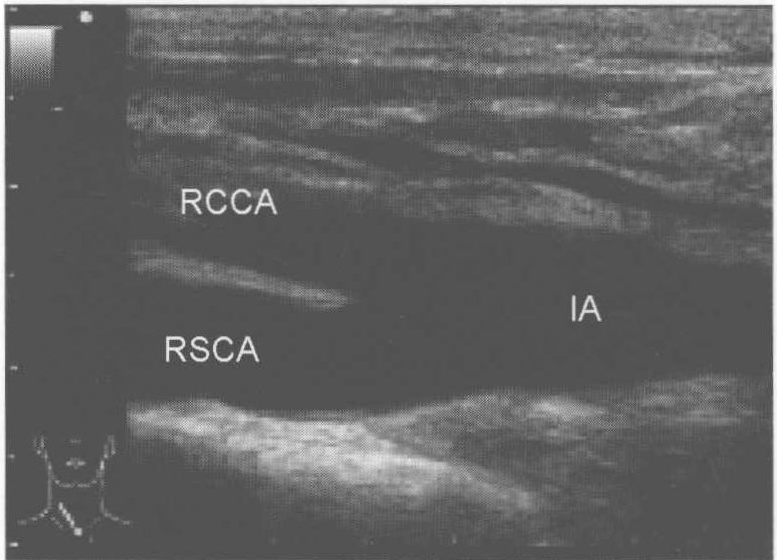
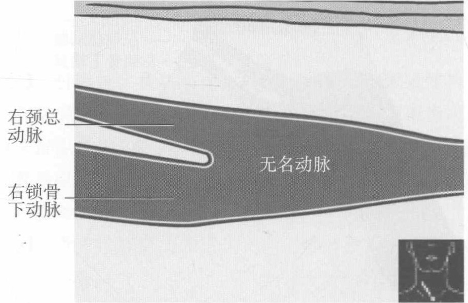
图7-9 右颈总动脉、右锁骨下动脉起始部及无名动脉纵切面
【探查方法】受检者取仰卧位，头略后仰，充分伸展颈部，头转向左侧或保持正中位，探头位于颈根部扫查，对于深在的颈动脉、锁骨下动脉起始段、主动脉弓可采用3～5MHz低频率的探头进行扫查。
【断面结构】右颈根斜行扫查时可见无名动脉、右锁骨下动脉和右颈总动脉起始部。
【测量方法】 测量颈动脉起始段、锁骨下动脉起始段内径，内-中膜厚度及斑块大小。
【临床意义】显示颈动脉、锁骨下动脉起始段、主动脉弓的解剖位置，管壁及管腔情况，测量血流频谱，诊断锁骨下动脉窃血综合征时，追踪锁骨下动脉起始或无名动脉有无狭窄、闭塞病变。
（十） 椎动脉起始部纵切面（图7-10）
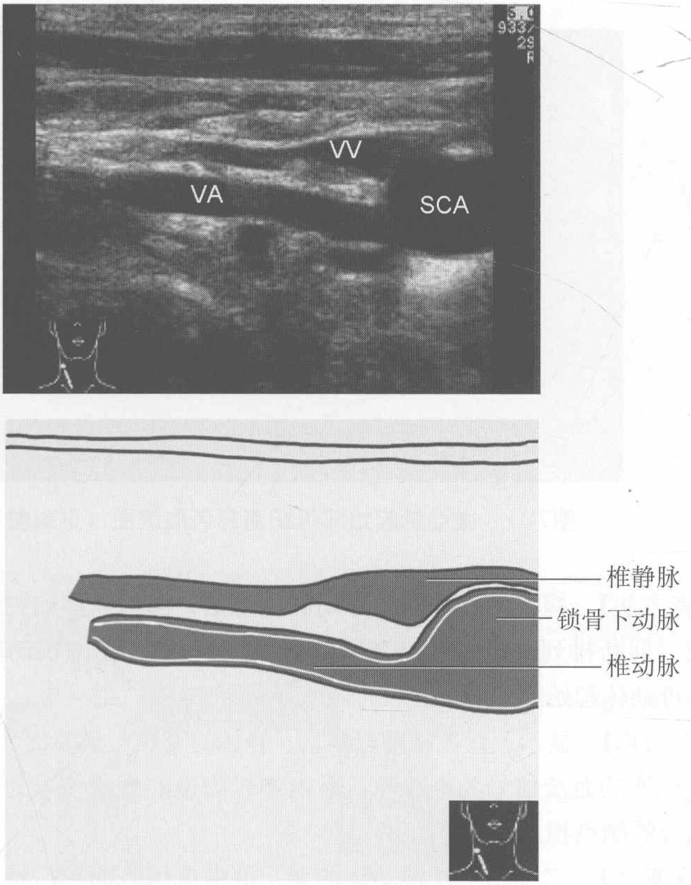
图7-10 椎动脉起始部纵切面
【探查方法】 探头纵切显示颈总动脉长轴后，向后外移动扫查，寻找颈椎的横突（间断排列并具有明显声影的强回声），向下追踪椎动脉至锁骨下动脉，显示椎动脉起始部纵切面。
【断面结构】显示近段或椎前段椎动、静脉的管腔长轴，椎动脉多在内后方。
【测量方法】 测量椎动脉内径，血流频谱。
【临床意义】显示椎动脉近段的解剖位置，诊断椎动脉起始部有无狭窄或闭塞。如果检测不到椎动脉，首先应怀疑椎动脉闭塞、椎动脉发育不良或单侧椎动脉闭锁，但后一种情况很少见。
（十一） 椎动脉起始部纵切面彩色血流图（图7-11）
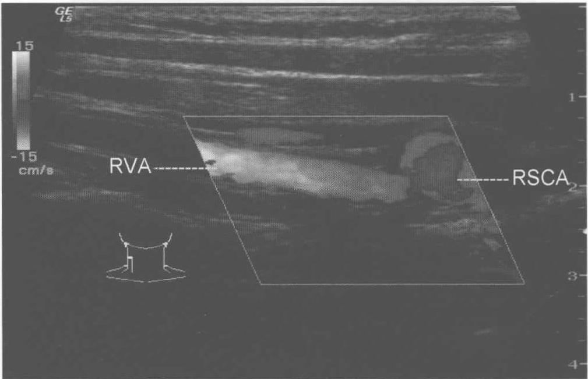
图7-11 椎动脉起始部纵切面彩色血流图（见彩图13）
【探查方法】 探头纵切显示颈总动脉长轴后，向后外移动扫查，寻找颈椎的横突（间断排列并具有明显声影的强回声），向下追踪椎动脉至锁骨下动脉，显示椎动脉起始部纵切面。
【断面结构】 显示近段或椎前段椎动、静脉的管腔长轴断面，两者呈平行走行。前方低速的血流信号为椎静脉，后内侧较高速的血流信号为椎动脉。二者血流信号的颜色相反。
【临床意义】二维超声对椎动脉的显示清晰度因人而异，特别是内膜显示不够清晰。一般情况下，均须用彩超追踪动脉走行，依据血流束的形态判断管腔是否狭窄或闭塞。所以彩超显示检查是必须的手段。
（十二） 椎动脉中段纵切面（图7-12）
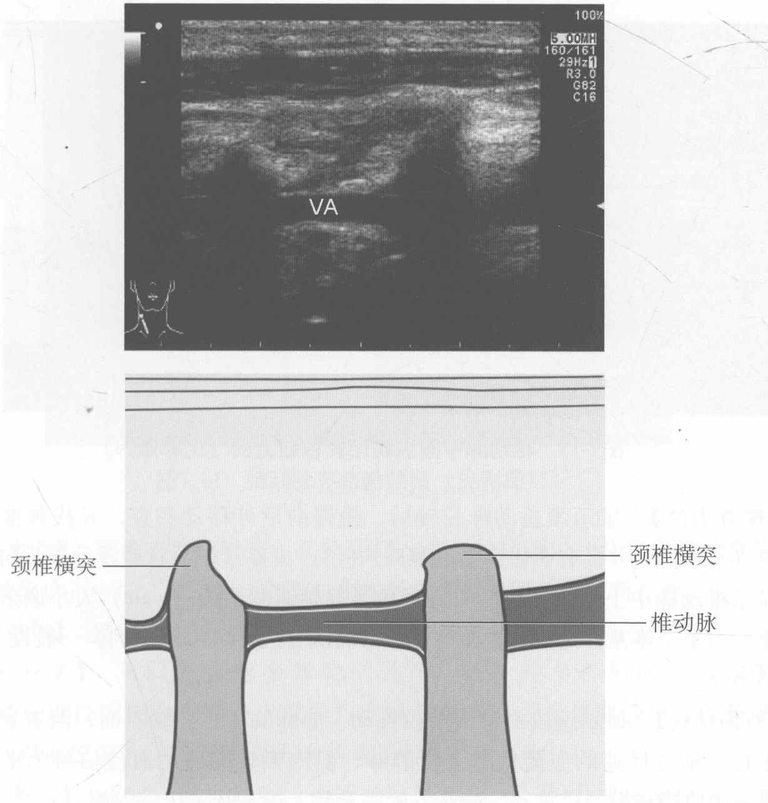
图7-12 椎动脉中段纵切面图
【探查方法】 显示颈总动脉长轴后，慢慢向后外移动扫查，寻找颈椎的横突（间断排列并具有明显声影的强回声），显示走行于椎体的横突内的椎动脉中上段纵切面。
【断面结构】显示中段或椎间段椎动、静脉的管腔长轴，椎动脉多在后内侧。
【测量方法】 测量椎动脉内径，血流频谱。
【临床意义】显示椎动脉中上段的解剖位置，诊断椎动脉中上段有无管腔狭窄或闭塞，诊断锁骨下动脉窃血综合征时，椎动脉血流频谱的改变是诊断的重要依据。
【附注】左、右椎动脉内径不一，多数情况下左侧大于右侧。
（十三） 椎动脉中段纵切面彩色血流图（图7-13）
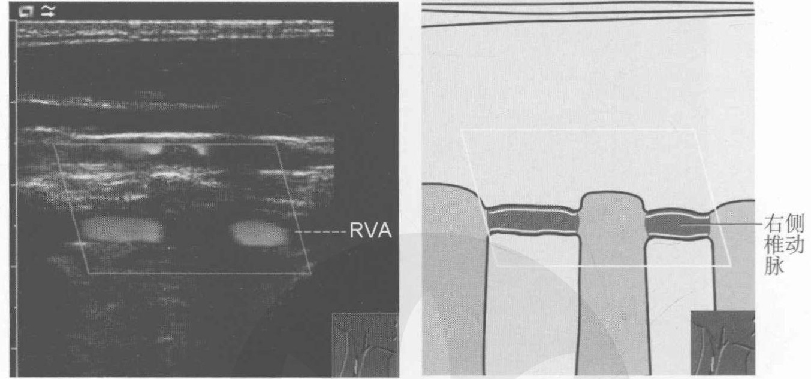
图7-13 椎动脉中段纵切面彩色血流图（见彩图14）
【探查方法】 显示颈总动脉长轴后，慢慢向后外移动扫查，寻找颈椎的横突（间断排列并具有明显声影的强回声区），或显示椎动脉近段后探头向上移，显示椎动脉中上段纵切面。一般彩色多普勒速度量程（scale）大小调节很重要，由于个体差异比较大，以血流信号充满管腔无外溢为原则。一般设10～13cm/s。
【断面结构】显示近段或称椎前段椎动、静脉的管腔长轴断面，两者呈平行走行。前方低速的血流信号为椎静脉，后内侧较高速的血流信号为椎动脉。显示中段或称椎间段椎动、静脉的管腔长轴，椎动脉多在后内侧。
【测量方法】 测量椎动脉内径，血流频谱。
【临床意义】二维超声对椎动脉的显示清晰度因人而异，特别是内膜显示不够清晰。一般情况下，均需用彩超追踪动脉走行，依据血流束的形态判断管腔是否狭窄或闭塞。正常情况下椎动脉及椎静脉的彩色血流信号颜色相反，即两根血管的血流方向相反，若出现血流信号颜色相同，考虑是否存在锁骨下动脉窃血综合征。所以彩超检查是必须的手段。但中间段很少见动脉硬化产生内膜增厚。
（十四） 椎动脉多普勒频谱（图7-14）
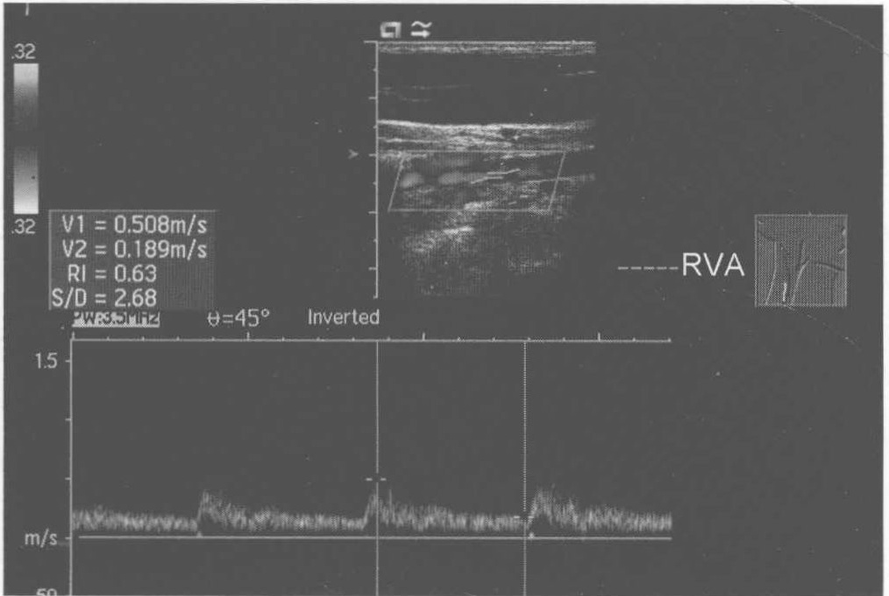
图7-14 椎动脉多普勒频谱（见彩图15）
【探查方法】受检者取仰卧位，头略后仰，充分伸展颈部，头转向被检查的对侧或保持正中位，探头置于颈部外侧或后外侧，自下而上纵断扫查。
【测量方法】可以在彩色多普勒引导下，将脉冲多普勒取样容积置于椎动脉近段或中段管腔中央或彩色血流信号最亮或花色血流信号的位置。多普勒声束校正角度 θ线尽量和血流束平行，角度 ≤60°。
【断面结构】显示椎动脉近段或中段纵断面，多普勒血流频谱。
【临床意义】 正常双侧椎动脉流速的正常范围很大，在出现临床症状之前，椎动脉频谱就可能出现明显的变化，轻微的椎动脉频谱改变根本不会有相应的症状出现。正常椎动脉呈低阻频谱，若阻力增高大于0.72，反映了血管弹性减低，又代表了远端颅内段血管的阻力增加，易致脑供血不足，当发生锁骨下动脉窃血综合征时，椎动脉频谱形态会出现由轻到重的系列改变即隐匿性窃血、不全窃血及完全窃血。
（十五） 左锁骨下动脉纵切面（图 7-15）
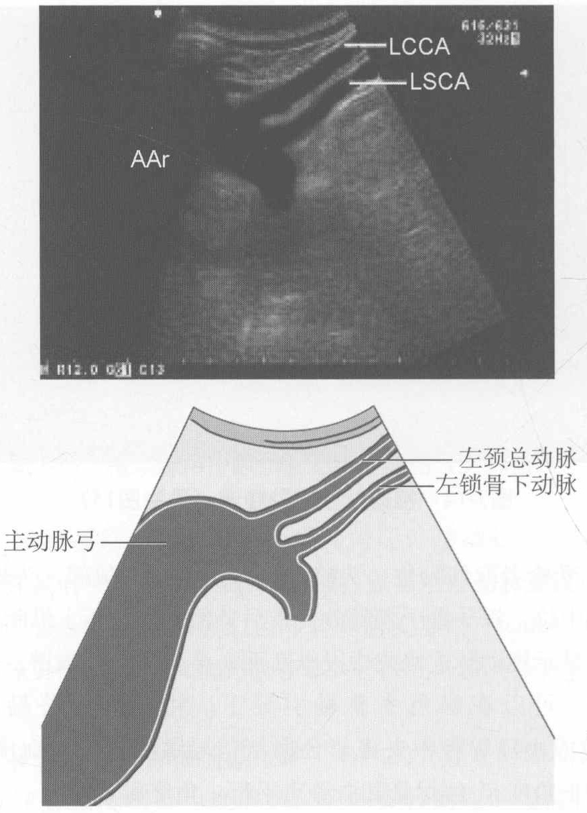
图7-15 左锁骨下动脉纵切面图
【探查方法】受检者取仰卧位，上肢外展，在颈根部胸锁关节上方，在锁骨上窝扫查锁骨下动脉近段，在锁骨下方纵切扫查锁骨下动脉中远段。
【断面结构】显示左锁骨下动脉、左颈总动脉及主动脉弓的长轴段断面。
【测量方法】 测量左锁骨下动脉内径，血流频谱。
【临床意义】诊断锁骨下动脉有无管腔狭窄或闭塞、动静脉瘘、锁骨下动脉窃血综合征、胸廓出口综合征（锁骨下动静脉受压）等疾病。
【附注】脉冲多普勒显示锁骨下动脉为高阻型血流频谱，女性或老年男性舒张末期可无正向血流。
（十六）右锁骨下动脉纵切面（图 7-16）
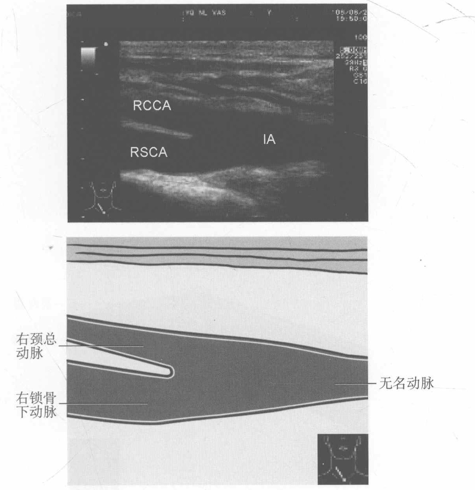
图7-16 右锁骨下动脉纵切面
【探查方法】受检者取仰卧位，上肢外展，在颈根部胸锁关节上方，在锁骨上窝扫查锁骨下动脉近段，在锁骨下方纵切扫查锁骨下动脉中远段。
【断面结构】显示右锁骨下动脉的管腔长轴，与之相伴行的锁骨下静脉，无名动脉。
【测量方法】 测量锁骨下动脉内径，血流频谱。
【临床意义】诊断锁骨下动脉有无管腔狭窄或闭塞、动静脉瘘、锁骨下动脉窃血综合征，胸廓出口综合征（锁骨下动静脉受压）等疾病。
【附注】脉冲多普勒显示锁骨下动脉为高阻型血流频谱，女性或老年男性舒张末期可无正向血流。
（十七） 腋动脉纵切面（图 7-17）
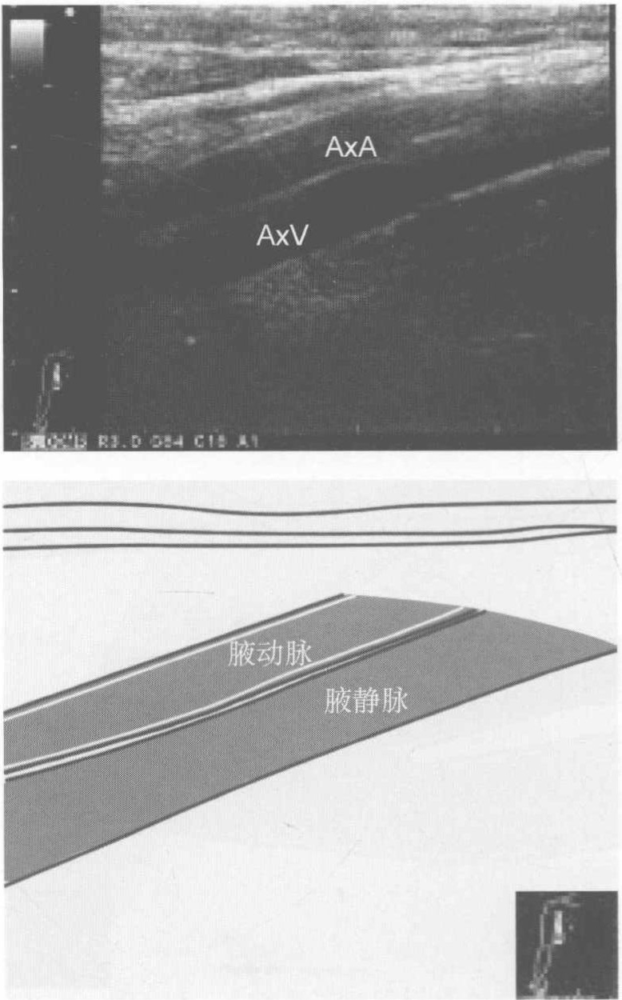
图7-17 腋动脉纵切面
【探查方法】受检者取仰卧位，探头置于腋前皱襞处，将手掌面向上，手臂置于检查位（行军礼位），扫查腋动脉。
【断面结构】显示腋动脉管腔长轴，与腋静脉伴行，腋动脉有搏动性，管腔不易被压瘪。
【测量方法】 测量腋动脉内径，血流频谱。
【临床意义】诊断腋动脉有无管腔狭窄或闭塞、血栓形成等疾病。胸廓出口综合征（腋动静脉受压），其周围结构病变如腋窝淋巴结肿大显示为腋动脉周围低回声结节。
（十八） 腋动脉横切面（图7-18）
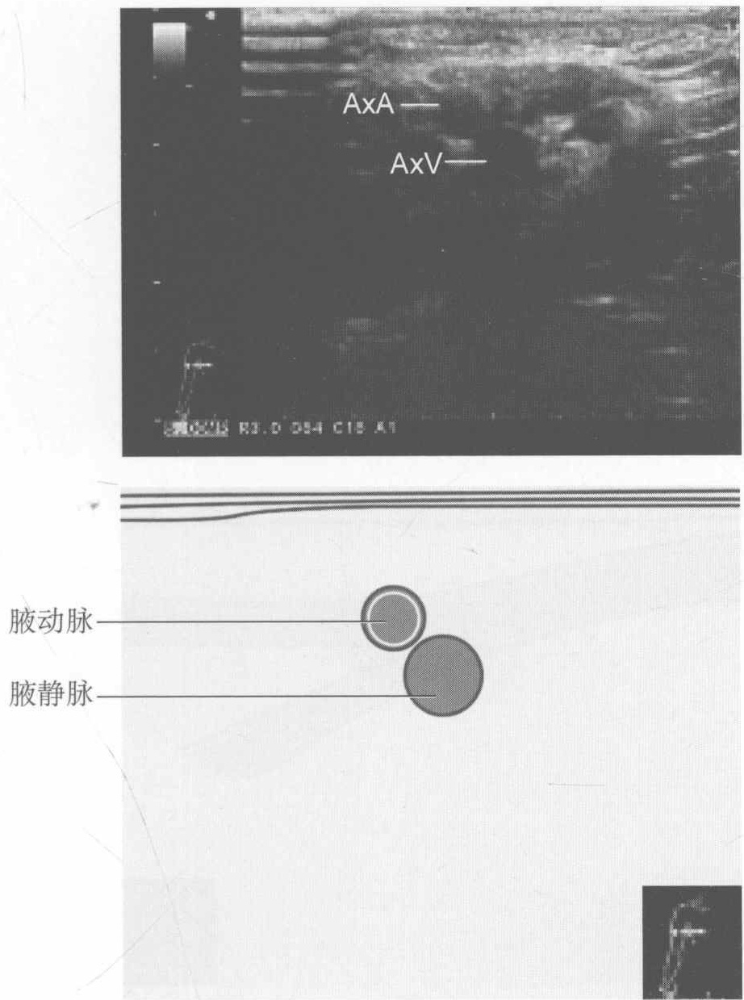
图7-18 腋动脉横切面
【探查方法】受检者取仰卧位，探头置于腋前皱襞处，将手掌面向上，手臂置于检查位（行军礼位），扫查腋动脉长轴切面后探头旋转 90°，和长轴垂直。【断面结构】显示腋动脉管腔短轴断面，与腋静脉伴行，腋动脉有搏动性，管腔不易被压瘪。
【测量方法】 测量腋动脉内径。
【临床意义】诊断腋动脉有无管腔狭窄或闭塞、血栓形成等疾病。胸廓出口综合征（腋动静脉受压），其周围结构病变如腋窝淋巴结肿大是显示为腋动静脉周围低回声结节。
（十九） 肱动脉纵切面（图 7-19）
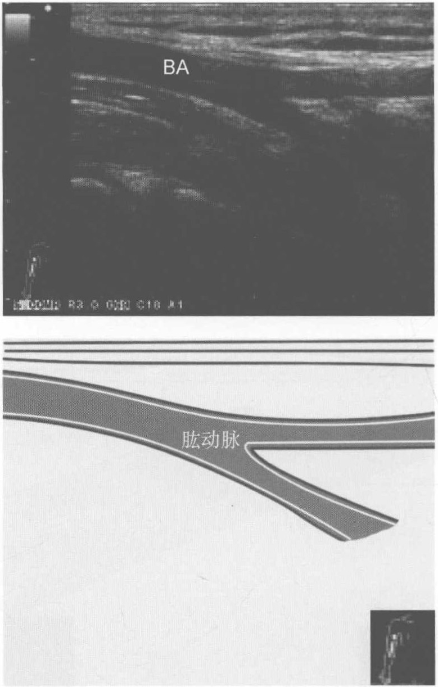
图7-19 肱动脉纵切面
【探查方法】受检者取仰卧位，上肢外展，探头置于肱二头肌内侧沟横向及纵向扫查肱动脉。
【断面结构】纵切面显示肱动脉管腔长轴，横切面呈圆形，与肱静脉伴行，肱动脉有搏动性，管腔不易被压瘪。
【测量方法】 测量肱动脉内径，血流频谱。
【临床意义】诊断肱动脉有无管腔狭窄或闭塞、血栓形成、动脉瘤等疾病。
（二十） 肱动脉横切面（图7-20）
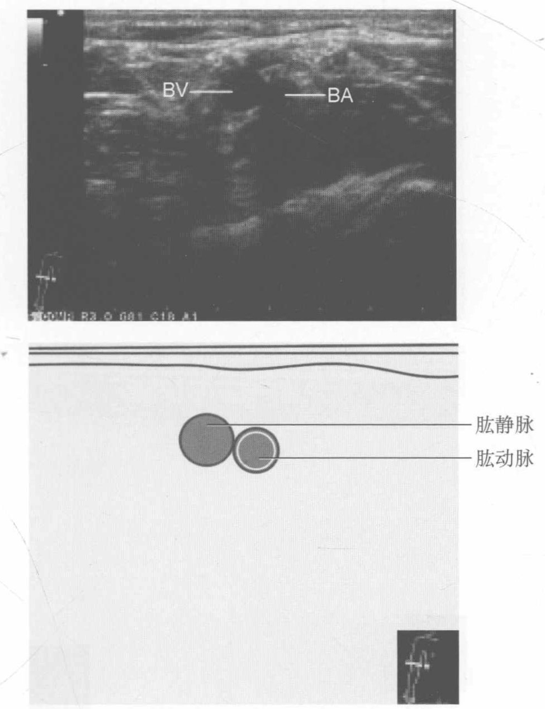
图7-20 肱动脉横切面
【探查方法】受检者取仰卧位，上肢外展，探头置于肱二头肌内侧沟横向扫查肱动脉，和纵切面垂直。
【断面结构】 肱动脉管腔横切面呈圆形，与肱静脉伴行，肱动脉有搏动性，管腔不易被压瘪。
【测量方法】 测量肱动脉内径。
【临床意义】诊断肱动脉有无管腔狭窄或闭塞、血栓形成、动脉瘤等疾病，注意肱动脉的走行，对于拟行肱动脉穿刺造影的患者，术前检查应提示是否有严重的走行纡曲。
（二十一） 桡动脉纵切面（图7-21）
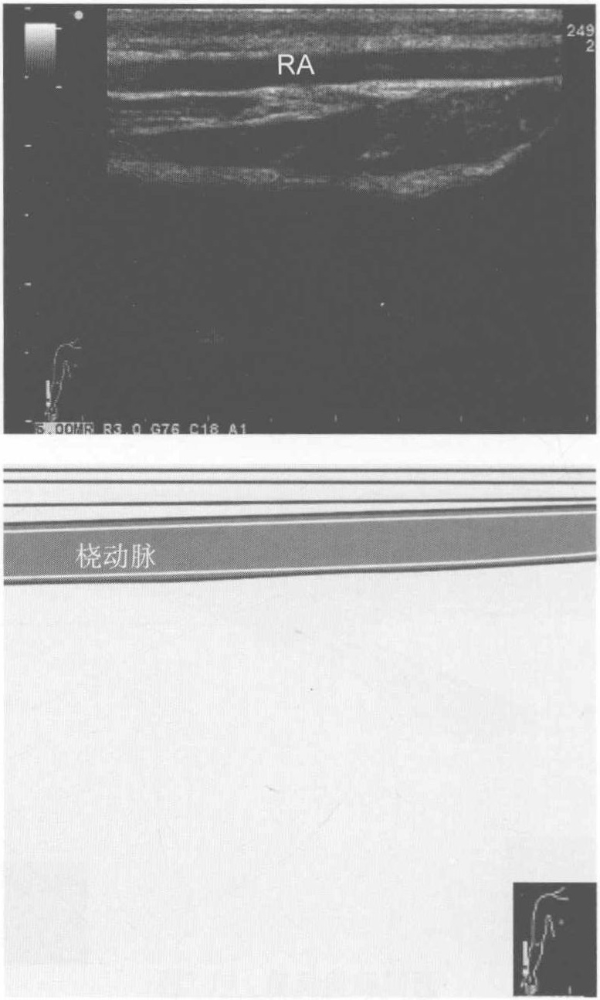
图7-21 桡动脉纵切面
【探查方法】受检者取仰卧位，上肢外展，探头纵切置于前臂手腕部桡侧探测桡动脉。
【断面结构】 显示桡动脉管腔长轴。
【测量方法】 测量桡动脉内径，血流频谱。
【临床意义】诊断桡动脉有无管腔狭窄或闭塞、血栓形成、动脉瘤等疾病，对于拟行桡动脉穿刺造影的患者，术前检查应提示是否有严重的走行纡曲。
（二十二） 尺动脉纵切面（图7-22）
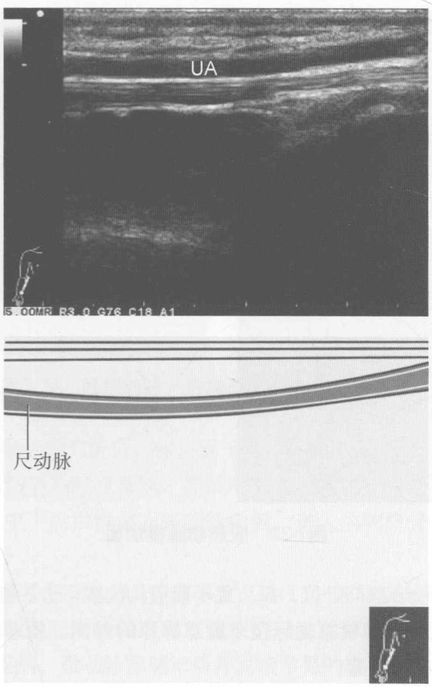
图7-22 尺动脉纵切面
【探查方法】受检者取仰卧位，上肢外展，探头纵切置于前臂手腕部尺侧扫查尺动脉。
【断面结构】显示尺动脉管腔纵切面。
【测量方法】 测量尺动脉内径，血流频谱。
【临床意义】诊断尺动脉有无管腔狭窄或闭塞、血栓形成、动脉瘤等疾病。
（二十三） 股总动脉横切面（图7-23）
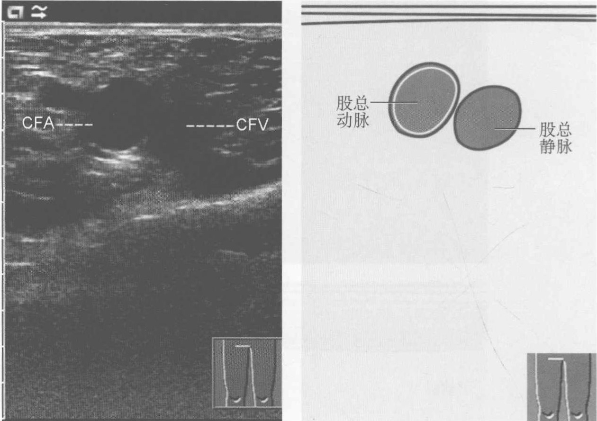
图7-23 股总动脉横切面
【探查方法】受检者取仰卧位，探头置于腹股沟区或下方扫查股总动脉。
【断面结构】横切显示股总动脉位于股总静脉的外侧，股总动脉呈圆形，有搏动性，管腔不易被压瘪。
【测量方法】 测量股总动脉动脉内-中膜厚度（IMT）、内径。
【临床意义】诊断股总动脉狭窄闭塞性疾病以及动脉栓塞、血栓形成、动脉瘤、动静脉瘘等疾病，对于拟行股动脉穿刺造影的患者，术前检查应提示是否有斑块及斑块的回声类型、大小及股总动脉残腔内径。
（二十四）股总动脉、股浅动脉及股深动脉纵切面（图7-24）
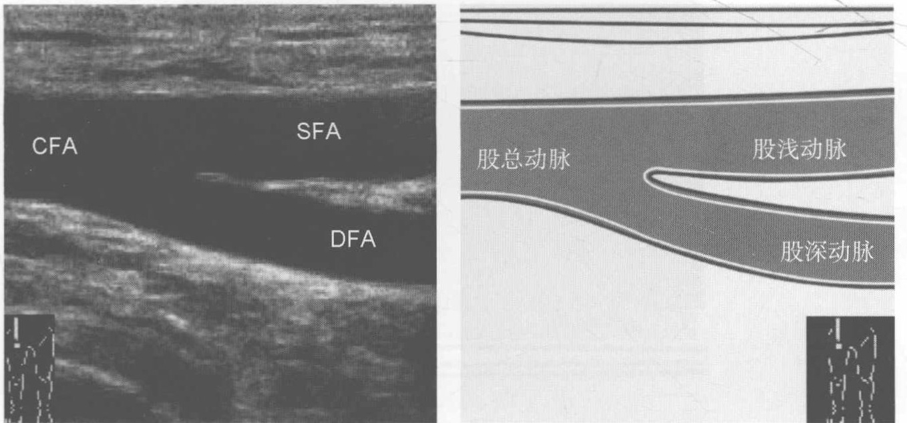
图7-24 股总动脉、股浅动脉及股深动脉纵切面
【探查方法】受检者取仰卧位，探头置于腹股沟区扫查股总动脉。
【断面结构】纵切显示股总动脉、股浅动脉及股深动脉长轴断面。股浅动脉上段比较表浅，中下段由股前方转到股内侧，进入内收肌管至腘窝移行为腘动脉。
【测量方法】 测量股总动脉内-中膜厚度（IMT）、内径及血流频谱。
【临床意义】诊断股总动脉狭窄闭塞性疾病以及动脉栓塞、血栓形成、动脉瘤、动静脉瘘等疾病。股动脉穿刺术后并发症常见的有假性动脉瘤及动静脉瘘，可以纵切及横切扫查，测量花色血流流速及宽度。
（二十五） 股浅及股深动脉横切面（图7-25）
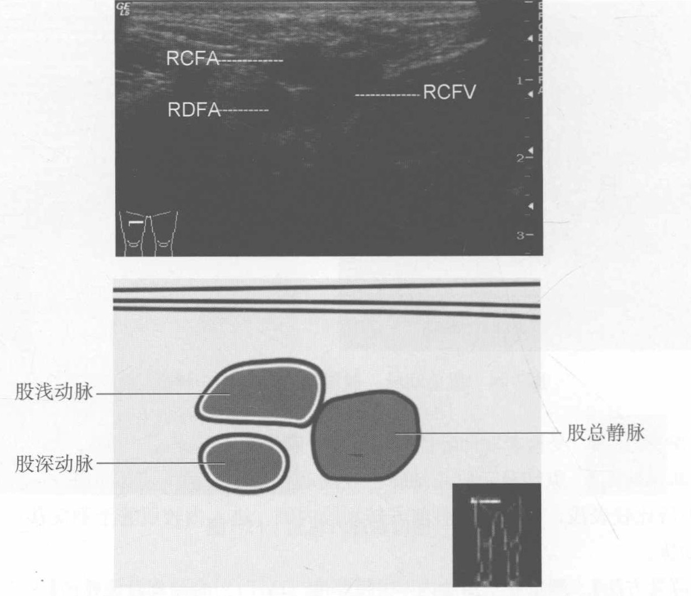
图7-25 股浅及股深动脉横切面
【探查方法】受检者取仰卧位，大腿外展、外旋、膝关节微屈，探头置于腹股沟韧带下方，从股总动脉分叉处向下沿股浅动脉走行扫查。
【断面结构】横切显示股浅动脉呈圆形，与股静脉伴行，有搏动性，管腔不易被压瘪，位置比较表浅。
【测量方法】 测量股浅动脉内-中膜厚度（IMT）、内径及血流频谱。
【临床意义】诊断股浅动脉狭窄闭塞性疾病、动脉栓塞、血栓形成、动脉瘤、动静脉瘘等疾病。
（二十六） 腘动脉纵切面（图7-26）
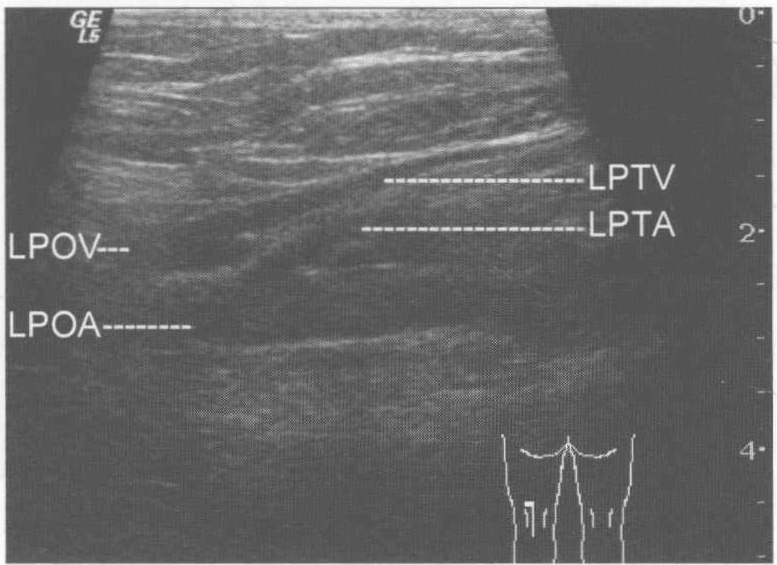
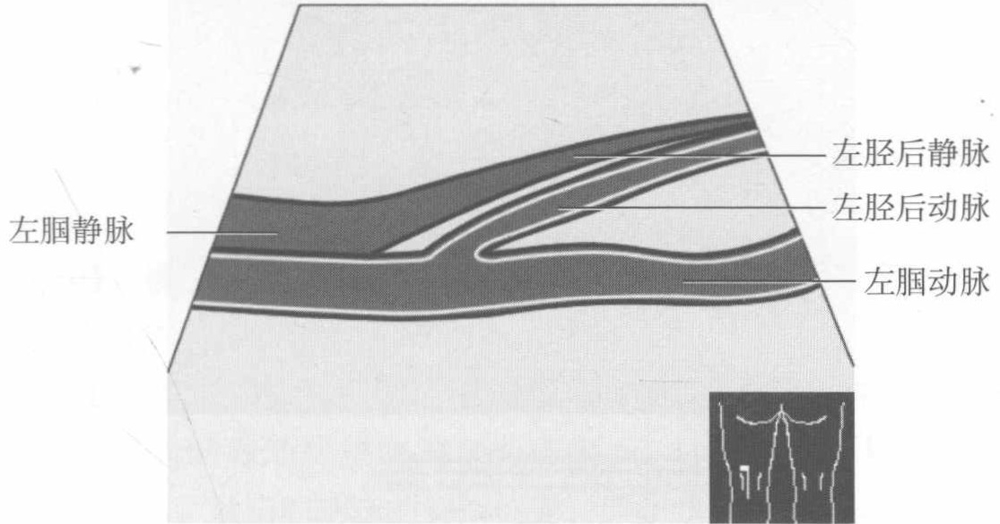
A. 纵切面
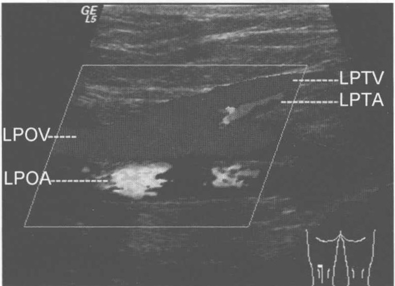
B. 彩色血流图（见彩图16）
图7-26 腘动脉纵切面图
【探查方法】受检者取俯卧位，距小腿关节垫高，以便静脉回流，探头竖置于腘窝处，显示长轴切面图。
【断面结构】纵切显示腘动脉管腔长轴断面，有搏动性，管腔不易被压瘪，位于腘静脉的前内侧即深部。
【测量方法】 测量腘动脉内-中膜厚度（IMT）内径及血流频谱。
【临床意义】诊断腘动脉狭窄闭塞性疾病、动脉栓塞、血栓形成、动脉瘤、动静脉瘘等疾病，显示腘动脉的解剖位置，诊断腘窝陷迫综合征。
（二十七） 腘动脉横切面（图7-27）
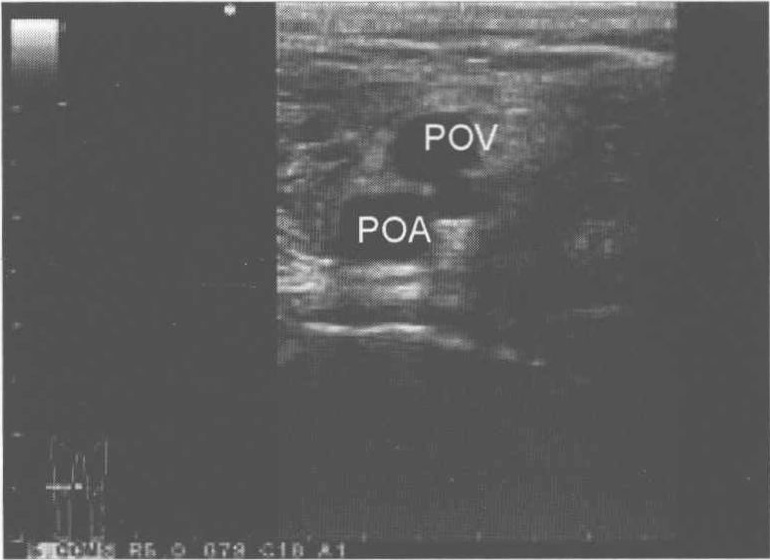
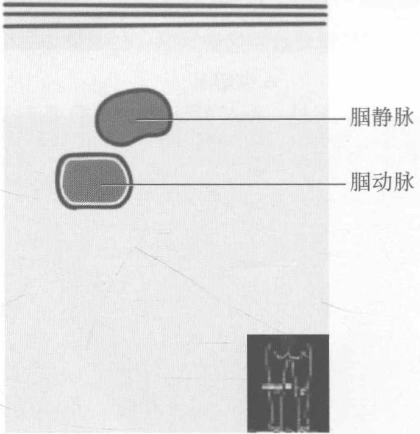
A. 横切面图
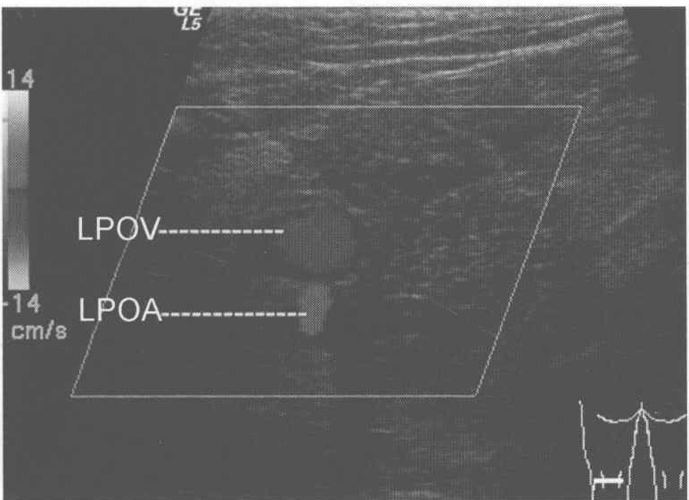
B. 彩色血流图（见彩图17）
图7-27 腘动脉横切面图
【探查方法】受检者取俯卧位，距小腿关节垫高，以便静脉回流，探头竖置于腘窝处，显示长轴切面图，在长轴切面的基础上探头旋转 90°横断扫查显示横切面图。
【测量方法】 测量腘动脉内-中膜厚度（IMT）、内径及血流频谱。
【断面结构】横切面显示腘动脉呈圆形，有搏动性，管腔不易被压瘪，位于腘静脉的前内侧即深部。
【临床意义】诊断腘动脉狭窄闭塞性疾病、动脉栓塞、血栓形成、动脉瘤、动静脉瘘等疾病，显示腘动脉的解剖位置，诊断腘窝陷迫综合征。
（二十八） 胫前动脉纵切面（图7-28）
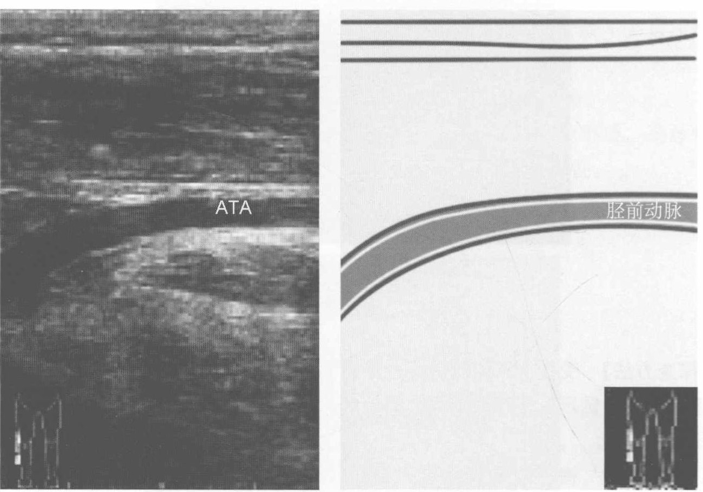
图7-28 胫前动脉纵切面
【探查方法】 受检者取仰卧位或坐位，探头置于胫骨前外侧 扫查，胫前动脉于小腿前外侧下行，远段位于小腿前方，还可从胫前动脉远端开始，自下而上扫查。
【断面结构】纵断面有搏动性，管腔不易被压瘪。
【测量方法】 测量胫前动脉内径及血流频谱。
【临床意义】诊断胫前动脉有无管腔狭窄或闭塞、血栓形成等疾病。
（二十九）胫前动脉横切面（图 7-29）
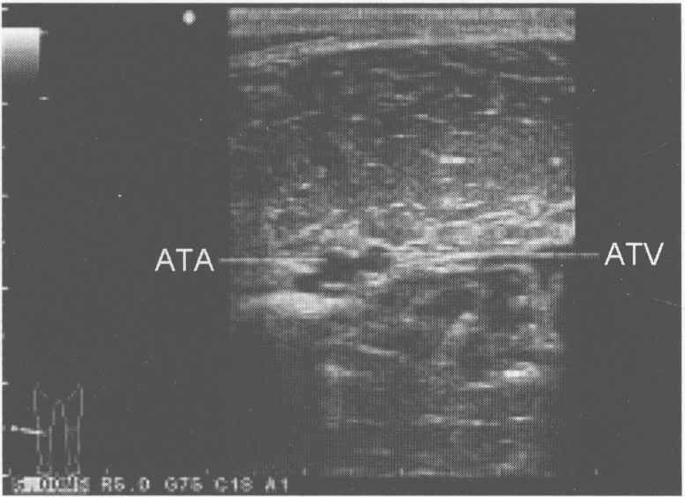
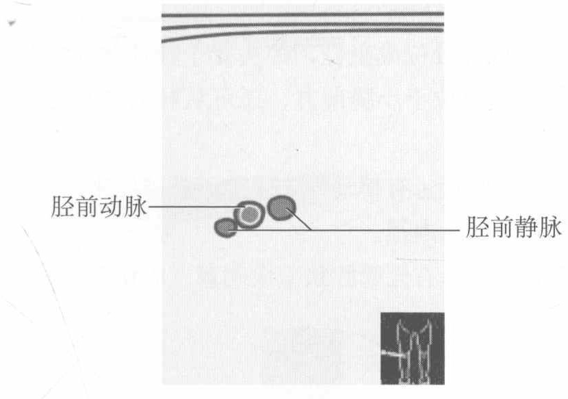
A. 横切面图
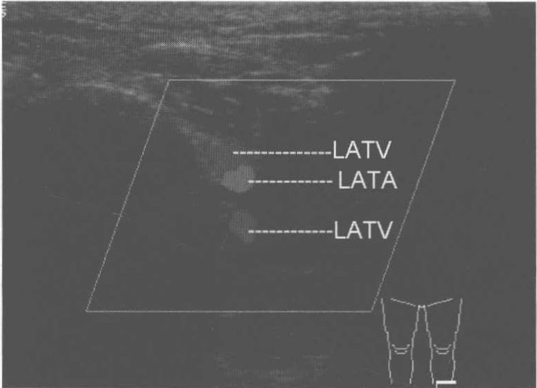
B. 彩色血流图
图7-29 胫前动脉横切面
【探查方法】受检者取仰卧位或坐位，探头置于胫骨前外侧扫查，胫前动脉于小腿前外侧下行，远段位于小腿前方，还可从胫前动脉远端开始，自下而上扫查。
【断面结构】横切面呈圆形，有搏动性，管腔不易被压瘪。
【测量方法】 测量胫前动脉内径。
【临床意义】诊断胫前动脉有无管腔狭窄或闭塞、血栓形成等疾病。
（三十） 胫后动脉纵切面（图 7-30）
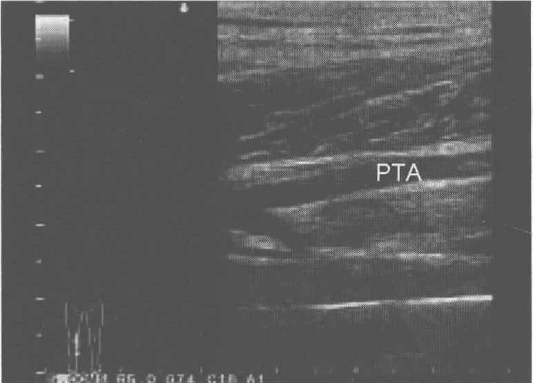
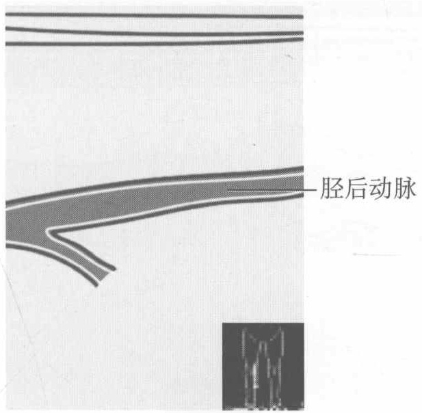
图7-30 胫后动脉纵切面
【探查方法】受检者取仰卧位或坐位，探头置于小腿内侧扫查，注意与腓动脉区别，胫后动脉位置比较表浅，还可从胫后动脉远端自下而上探查。
【断面结构】纵切面显示胫后动脉管腔长轴断面，横切面呈圆形，有搏动性，管腔不易被压瘪。
【测量方法】 测量胫后动脉内径，血流频谱。
【临床意义】诊断胫后动脉有无管腔狭窄或闭塞、血栓形成等疾病。
（三十一） 胫后动脉横切面（图7-31）
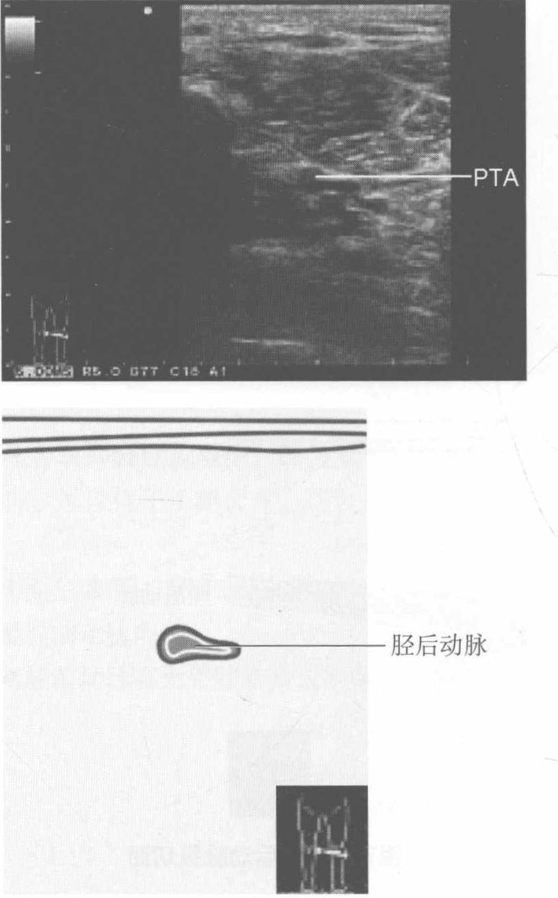
图7-31 胫后动脉横切面
【探查方法】受检者取仰卧位或坐位，探头横置于小腿内侧扫查，注意与腓动脉区别，胫后动脉位置比较表浅，还可从胫后动脉远端自下而上探查。
【断面结构】横切面显示胫后动脉有两条胫后静脉伴行，有搏动性，管腔不易被压瘪。
【测量方法】 测量胫后动脉内径。
【临床意义】诊断胫后动脉有无管腔狭窄或闭塞、血栓形成等疾病。
（三十二） 足背动脉纵切面（图7-32）
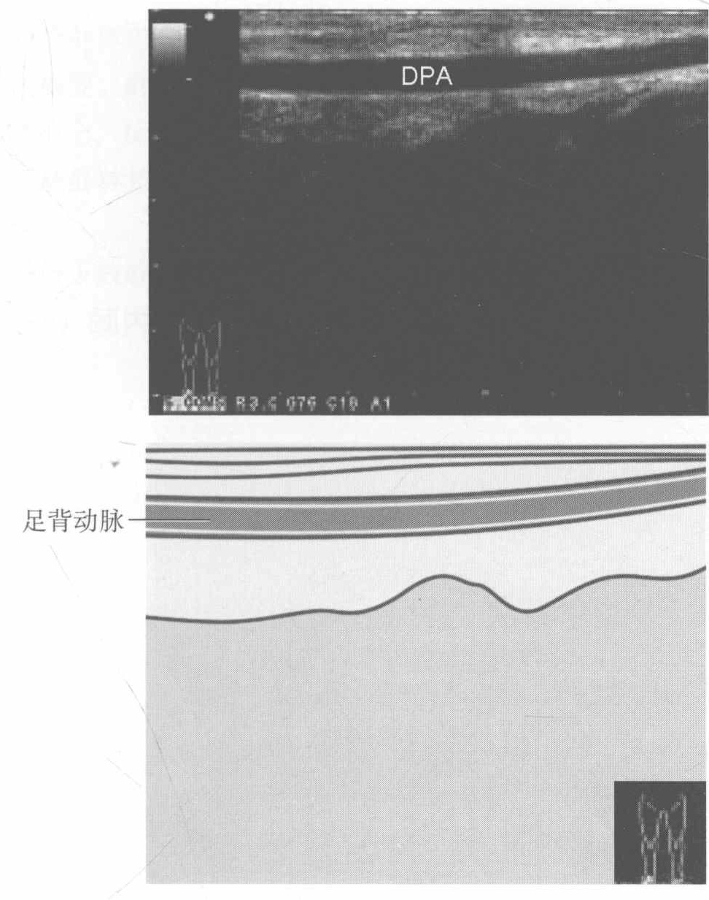
图7-32 足背动脉纵切面
【探查方法】受检者取仰卧位或坐位，探头沿胫前动脉远段向下扫查，胫前动脉经内外踝连线的中点移行为足背动脉，足背动脉位置表浅，可触及其搏动。
【断面结构】 显示足背动脉管腔结构。
【测量方法】 测量足背动脉内径及血流频谱。
【临床意义】诊断足背动脉有无管腔狭窄或闭塞、血栓形成等疾病。
【附注】下肢血管检查必要时，频谱出现低钝、流速减慢时，应仔细检查近心段血管是否有病变，因此还需检测髂外、髂总血管和腹主动脉甚至主动脉弓，观察它们有无病变。
（三十三） 足背动脉横切面（图7-33）
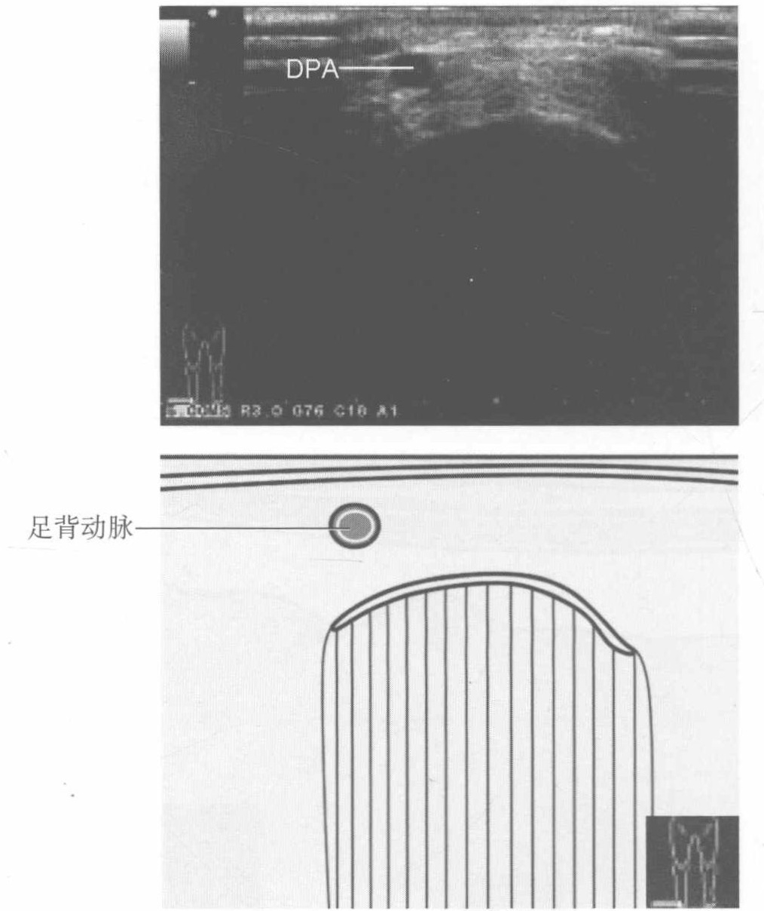
图7-33 足背动脉横切面
【探查方法】受检者取仰卧位或坐位，探头沿胫前动脉远段向下扫查，胫前动脉经内外踝连线的中点移行为足背动脉，足背动脉位置表浅，可触及其搏动。
【断面结构】 显示足背动脉管腔横断面结构。
【测量方法】 测量足背动脉内径。
【临床意义】诊断足背动脉有无管腔狭窄或闭塞、血栓形成等疾病。
【附注】下肢血管检查必要时，频谱出现低钝、流速减慢时，应仔细检查近心段血管是否有病变，因此还需检测髂外、髂总血管和腹主动脉甚至主动脉弓，观察它们有无病变。
二、 静脉系统
外周静脉的测量根据病情的需要，一般不测量内径，除非有扩张、血栓或其他病变。静脉多普勒检查是静脉反流中最常用的测量方法，用于检测静脉功能不全。反流时间的测定可以大概预测功能不全的程度。
下肢静脉检查必要时还需检查髂外、髂总静脉和下腔静脉，观察它们有无血栓。
进行下肢静脉瓣膜功能不全检查时，应采取立位，受检侧下肢不负重。
（一） 颈内静脉纵、横切面（图7-34）
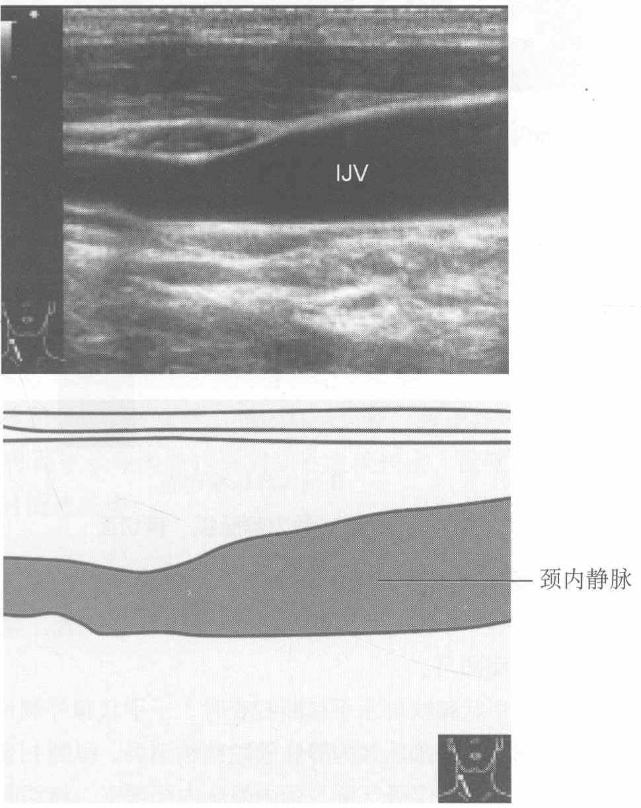
A. 颈内静脉纵切面
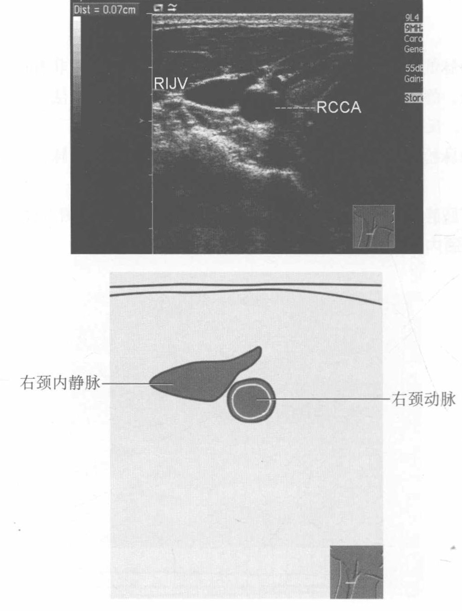
B. 颈内静脉横切面
图7-34 颈内静脉纵、横切面
【探查方法】受检者取仰卧位，头略后伸，充分伸展颈部，头转向被检查的对侧或保持正中位，探头置于颈部外侧，自下而上扫查。横切面扫查：探头旋转垂直于纵切面即可。
【断面结构】在甲状腺峡部水平横断扫查时，于甲状腺外侧可显示颈内静脉位于颈总动脉外侧，探头加压颈内静脉管腔结构消失，纵断扫查时，颈内静脉近端一般可见静脉瓣膜，深吸气屏气颈内静脉内径增宽。横切面管腔呈扁圆形。
【测量方法】 测量颈内静脉直径。横切面测其最大径，约1.1cm，但个体差异很大，双侧内径可以不同。
【临床意义】诊断颈内静脉扩张症、颈内静脉血栓形成、颈动静脉瘘等疾病。
（二） 颈内静脉血流频谱（图7-35）
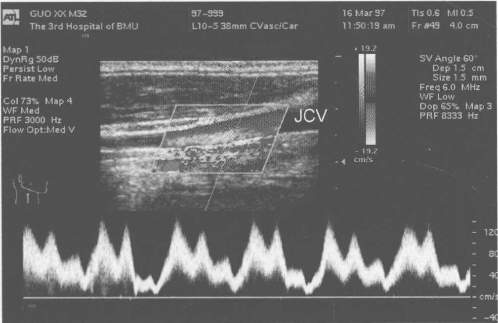
图7-35 颈内静脉血流频谱（见彩图18）
【探查方法】受检者取仰卧位，头略后仰，充分伸展颈部，头转向被检查的对侧或保持正中位，探头置于颈部，自下而上扫查。
【断面结构】在甲状腺峡部水平横断扫查时，于甲状腺外侧可显示颈内静脉和颈总动脉，探头加压颈内静脉管腔结构消失，纵断扫查时，颈内静脉近端一般可见静脉瓣膜，深吸气屏气后颈内静脉内径增宽。
【临床意义】诊断颈内静脉扩张症、颈内静脉血栓、颈动静脉瘘等疾病。
【附注】脉冲多普勒显示颈内静脉呈周期性血流频谱，深吸气时频谱峰值流速增快，深呼气时流速减慢。
（三） 锁骨下静脉纵切面（图7-36）
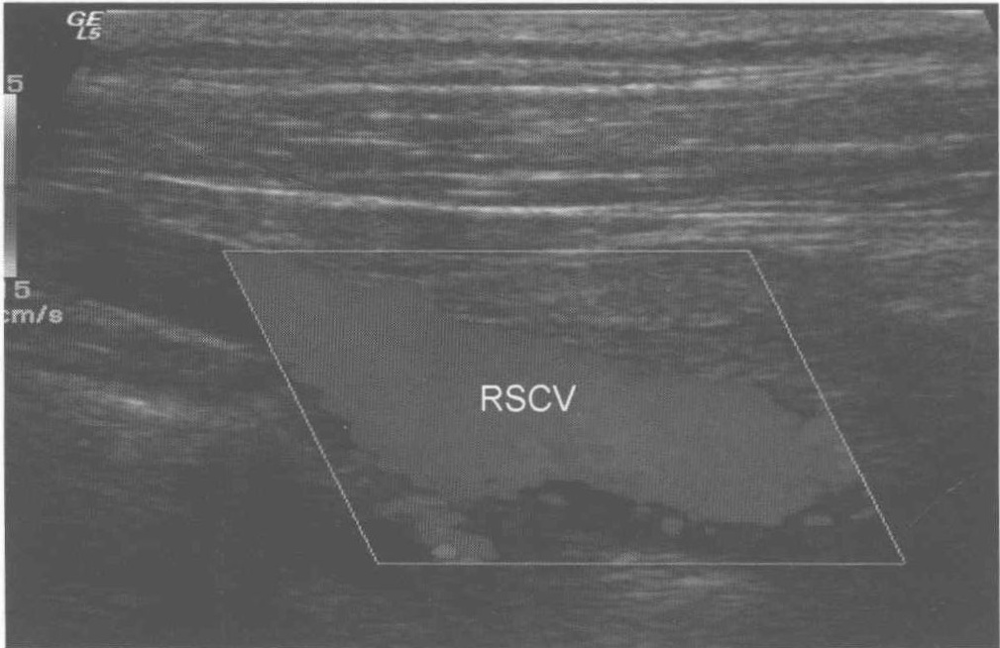
图7-36 锁骨下静脉纵切面（见彩图19）
【扫查方法】受检者取仰卧位，上肢外展，探头置于颈根部胸锁关节上方、锁骨上窝扫查左锁骨下静脉及右侧无名动脉和左、右无名静脉。一般使用5MHz的凸阵或扇扫探头。锁骨下静脉一般位于锁骨下动脉的前下方，比较难显示。可以取锁骨上、下路径或胸骨上窝路径进行探查。
【断面结构】锁骨下静脉长轴断面。
【测量方法】 测量静脉内径，血流频谱。锁骨下静脉及腋静脉具有两个前向波峰以及一个负向波峰。
【临床意义】诊断上肢静脉血栓、动静脉瘘等疾病。
（四） 腋静脉纵切面（图7-37）
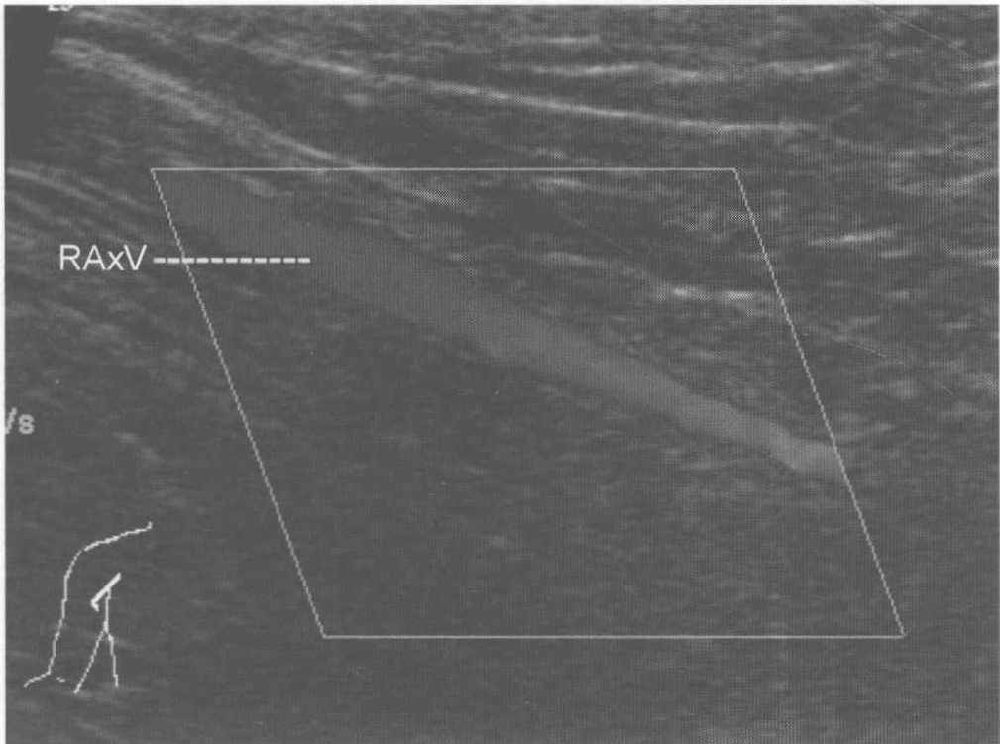
图7-37 腋静脉纵切面（见彩图20）
【扫查方法】可以从胸前扫查在胸前肌肉的后方探头置于腋前皱襞处，先扫查腋动脉，在动脉后内方显示腋静脉。
【断面结构】腋静脉管壁薄，内径大于伴行动脉，横切面呈椭圆形，无搏动性，探头轻压后其管腔可压瘪，吸气末屏气或 Valsalva 试验后管径增大。
【临床意义】诊断上肢静脉血栓形成、动静脉瘘等疾病。
（五） 肱静脉纵切面（图7-38）
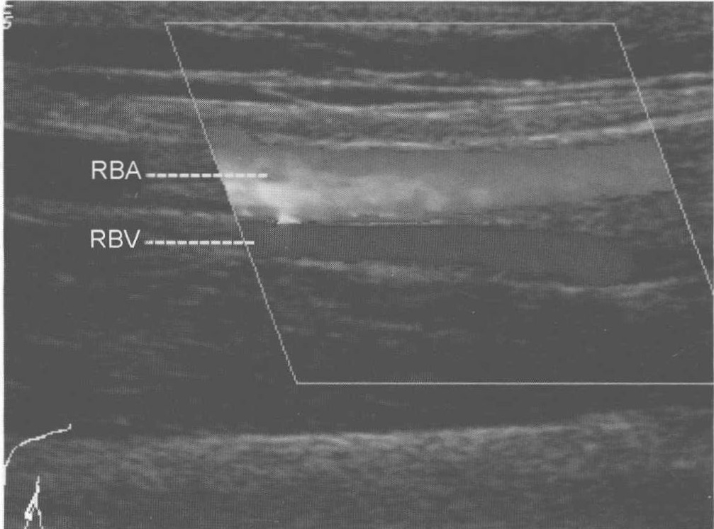
图7-38 肱静脉纵切面（见彩图21）
【扫查方法】 探头置于肱二头肌内侧寻找肱动脉，然后再探查其两侧寻找肱静脉。
【断面结构】 腋静脉管壁薄，内径大于伴行的肱动脉，横切面呈椭圆形，无搏动性，探头轻压后其管腔可压瘪，吸气末屏气或 Valsalva 试验后管径增大。
【临床意义】诊断上肢静脉血栓、动静脉瘘等疾病。
（六）头静脉纵切面（图7-39）
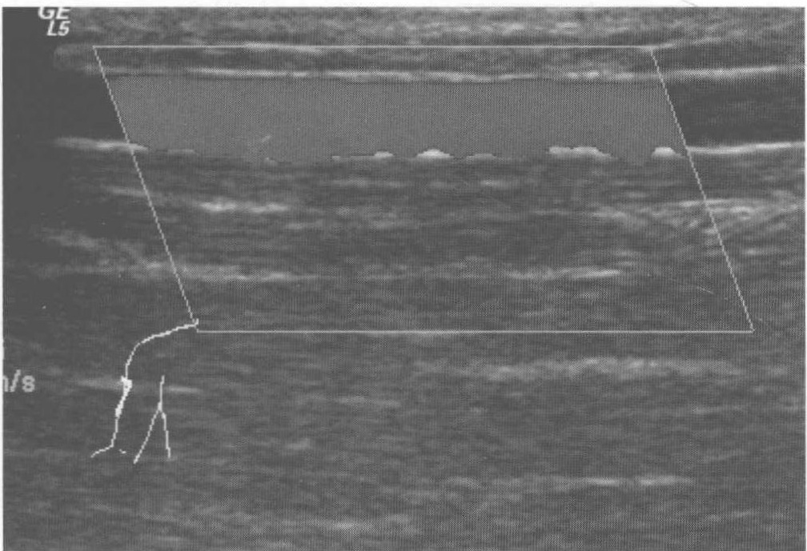
图7-39 头静脉纵切面彩色血流图（见彩图22）
【扫查方法】 先找到头静脉于锁骨下静脉或腋静脉的连接处，然后沿肱二头肌外侧追踪观察。
【断面结构】头静脉纵切面。
【临床意义】诊断上肢静脉血栓形成、动静脉瘘等疾病。
（七） 贵要静脉纵切面（图7-40）
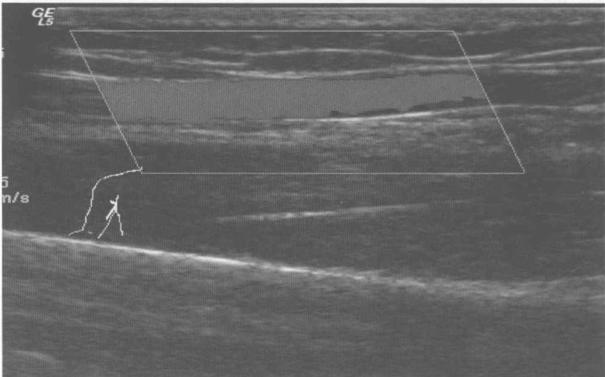
图7-40 贵要静脉纵切面彩色血流图（见彩图23）
【扫查方法】于锁骨下静脉的连接处沿肱二头肌内侧追踪观察。
【断面结构】贵要静脉长轴断面。
【临床意义】诊断静脉血栓、动静脉瘘等疾病。
【测量方法】测量静脉内径，血流频谱。
【附注】上肢静脉彩色血流显示与伴行动脉血流方向相反，静止状态下为受呼吸影响的自发性血流，尺桡静脉常成对伴行于同名动脉两侧。一般上肢静脉探测到肘部即可，如有需要再做检查。
（八） 股静脉纵切面（图7-41）
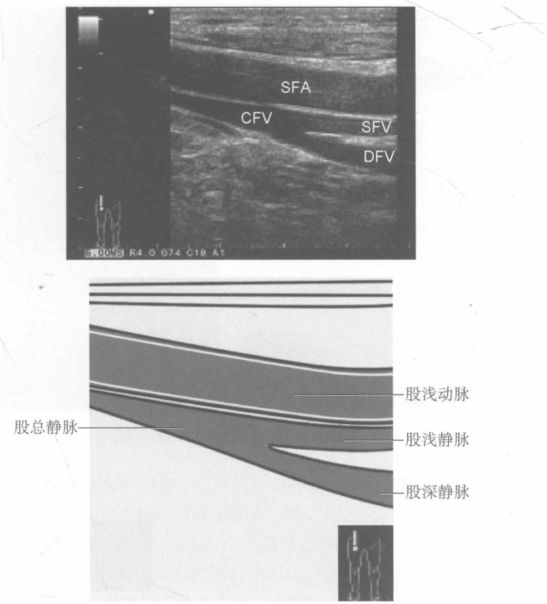
【探查方法】受检者取仰卧位，大腿外展、外旋、膝关节微屈，探头置于大腿前内侧，股浅动脉内侧显示股总静脉、股浅静脉及股深静脉。
图7-41 股静脉纵切面图
【断面结构】股浅动脉内侧显示股总静脉、股浅静脉及股深静脉。股浅静脉和股深静脉的汇合处位于股动脉分叉下方2～3cm处。
【测量方法】 测量股总静脉的内径及血流频谱。
【临床意义】诊断下股静脉血栓形成、动静脉瘘等疾病。
（九） 股静脉横断面（图7-42）
图7-42 股静脉横断面
【探查方法】受检者取仰卧位，探头置于腹股沟区扫查。
【断面结构】股总静脉管壁薄，膨大处的管腔内可见静脉瓣开启、关闭，内径可随呼吸变化而改变（下肢静脉吸气末屏气或做 Valsalva 试验后管径增大），横断面显示股总静脉与股总动脉伴行，股总静脉管腔呈椭圆形，探头加压后其管腔可被压瘪。
【测量方法】 测量股总静脉内径。
【临床意义】诊断股总静脉血栓、动静脉瘘、静脉瘤、下肢静脉瓣膜关闭功能不全等疾病。
（十） 股静脉及大隐静脉横断面（图7-43）
图7-43 股静脉及大隐静脉横断面
【探查方法】受检者取仰卧位，大腿外展、外旋、膝关节微屈，探头置于大腿前内侧，大隐静脉位于股动脉的前内侧，汇入其后方的股总静脉。
【断面结构】股总动脉、股总静脉、大隐静脉横断面。
【测量方法】测大隐静脉内径。
【临床意义】诊断下肢浅静脉血栓形成、动静脉瘘等疾病。大隐静脉可取做桥血管用于心脏搭桥。横断面测量其前后径，尤其是小腿段内径有助于临床选择，但此时应仔细检查下肢深静脉是否通畅。
（十一） 大隐静脉及股总静脉纵切面（图7-44）
图7-44 大隐静脉及股总静脉纵切面
【探查方法】 探头先置于腹股沟区，显示大隐静脉与股总静脉汇合处，然后沿大隐静脉走行扫查，可采用横切与纵切相结合方法。大隐静脉为全身最大、最长的浅静脉，起始于足背静脉弓的内侧缘，经内踝之前方约1cm处，沿小腿内侧上升，经膝关节内侧，绕胫骨和股骨内侧髁的后部，距股骨内上踝约2cm，再沿大腿内侧上升，至腹股沟韧带下方，平均为3～4cm处，穿过卵圆窝筛状板汇入股静脉。
【断面结构】大隐静脉管壁薄，与股总静脉汇合处管腔内可见静脉瓣开启、关闭，横断面显示大隐静脉管腔呈椭圆形，探头加压后其管腔可被压瘪，纵切面显示大隐静脉管腔长轴。
【测量方法】 测量大隐静脉内径，血流频谱。
【临床意义】诊断大隐静脉血栓形成，动静脉瘘、静脉瘤、静脉曲张以及下肢静脉瓣膜关闭功能不全等疾病。瓣膜关闭功能不全时测量反流持续时间（VCT）及反流速度。
（十二） 股浅静脉纵切面（图7-45）
图7-45 股浅静脉管腔长轴切面
【探查方法】受检者取仰卧位，大腿外展、外旋，膝关节微屈，探头竖置于腹股沟区，从股深、股浅静脉会合成为股总静脉处，沿股浅静脉走行扫查，股浅静脉上段位置较表浅。
【断面结构】股浅静脉管壁薄，膨大处的管腔内可见静脉瓣开启、关闭，内径可随呼吸变化而改变（下肢静脉吸气屏气或做乏氏试验后管径增大），纵断面显示股浅静脉与股浅动脉伴行，位于股浅动脉的后方，探头加压后其管腔可被压瘪。
【测量方法】测股浅静脉内径及血流频谱。
【临床意义】诊断股浅静脉血栓、动静脉瘘、静脉瘤、下肢静脉瓣膜关闭功能不全等疾病。
（十三） 股浅静脉横切面（图7-46）
图7-46 股浅静脉横切面
【探查方法】受检者取仰卧位，大腿外展、外旋、膝关节微屈，探头置于腹股沟区，从股深、股浅静脉会合成为股总静脉处，沿股浅静脉走行扫查，股浅静脉上段位置较表浅。
【断面结构】股浅静脉管壁薄，膨大处的管腔内可见静脉瓣开启、关闭，内径可随呼吸变化而改变（下肢静脉吸气末屏气或做 Valsalva 试验后管径增大），横断面显示股浅静脉与股浅动脉伴行，位于股浅动脉的后方，股浅静脉的管腔呈椭圆形，探头加压后其管腔可被压瘪。
【测量方法】 测量股浅静脉内径。
【临床意义】诊断股浅静脉血栓形成、动静脉瘘、静脉瘤、下肢静脉瓣膜关闭功能不全等疾病。
（十四）腘静脉纵切面（图7-47）
A. 纵切面图
B. 彩色血流图（见彩图24）
图7-47 腘静脉纵切面
【探查方法】受检者取俯卧位，探头置于腘窝处。膝关节稍弯曲，也可以取仰卧位。开始检查时应将探头置于股浅静脉远心段，以确信股浅静脉和腘静脉的延续。
【断面结构】纵切面显示腘静脉与腘动脉伴行，还可显示胫后静脉及胫后动脉长轴断面。探头加压后其管腔可被压瘪。
【测量方法】 测量腘静脉内径，血流频谱。
【临床意义】诊断腘静脉血栓形成、动静脉瘘、静脉瘤、下肢静脉瓣膜关闭功能不全等疾病。
（十五） 腘静脉横切面（图7-48）
A. 横切面
B. 彩色血流图（见彩图25）
图7-48 腘静脉横切面
【探查方法】受检者取俯卧位，探头横置于腘窝处。膝关节稍弯曲，也可以取仰卧位。开始检查时应将探头横至于股浅静脉远心段，以确信股浅静脉和腘静脉的延续，然后向下扫查。
【临床意义】诊断腘静脉血栓形成、动静脉瘘、静脉瘤、下肢静脉瓣膜关闭功能不全等疾病。
【断面结构】横切面显示腘静脉与腘动脉伴行，呈椭圆形，探头加压后其管腔可被压瘪。
【测量方法】 测量腘静脉内径，血流频谱。
（十六） 胫前静脉纵切面（图7-49）
A. 纵切面
B. 彩色血流图（见彩图26）
图7-49 胫前静脉纵切面
【探查方法】受检者取仰卧位或坐位，探头先置于内外踝连线的中点附近，显示胫前静脉远心段后沿小腿前外侧向上追踪观察。
【断面结构】显示两根胫前静脉管腔长轴与胫前动脉伴行，探头加压后其管腔可被压瘪，纵切面显示胫前静脉。
【测量方法】 测量胫前静脉内径及血流频谱。
【临床意义】诊断胫前静脉血栓形成、静脉曲张、动静脉瘘等疾病。
（十七） 胫前静脉横切面（图7-50）
A. 横切面
B. 彩色血流图（见彩图27）
图7-50 胫前静脉横切面
【探查方法】受检者取仰卧位或坐位，探头横置于胫骨前外侧扫查，胫前动脉于小腿前外侧下行。
【测量方法】 测量胫前静脉内径。
【断面结构】横切面呈圆形，位于胫前动脉两侧，两根胫前静脉与胫前动脉伴行，管腔可被压瘪。
【临床意义】诊断胫前静脉血栓形成、静脉曲张、动静脉瘘等疾病。
（十八） 胫后静脉纵切面（图 7-51）
A. 纵切面
B. 彩色血流图（见彩图28）
图7-51 胫后静脉纵切面
【探查方法】受检者取仰卧位或坐位，膝关节稍屈曲，小腿外展，探头置于小腿前内侧扫查，声束指向后方或后外方，尽量避开肌肉的影响，沿胫骨外侧和肌肉之间的间隙向上追踪，也可以从小腿后侧或小腿前外侧扫查。胫后静脉位于胫后动脉的两侧，位置比较表浅。
【断面结构】纵切面显示胫后静脉管腔长轴，无搏动性，管腔可被压瘪。
【测量方法】 测量胫后静脉内径，血流频谱。
【临床意义】诊断胫后静脉血栓形成、静脉曲张、动静脉瘘等疾病。
（十九） 胫后静脉横切面（图7-52）
A. 横切面
B. 彩色血流图（见彩图29）
图7-52 胫后静脉横切面
【探查方法】受检者取仰卧位或坐位，探头置于小腿前内侧扫查，还可从胫后静脉远端，自下而上探查。
【测量方法】 测量胫后静脉内径。
【断面结构】横切面显示胫后静脉与胫后动脉伴行，胫后静脉呈椭圆形，位于胫后动脉的两侧，探头加压后其管腔可被压瘪。
【临床意义】诊断胫后静脉血栓、静脉曲张、动静脉瘘等疾病。
（苏博勇强）